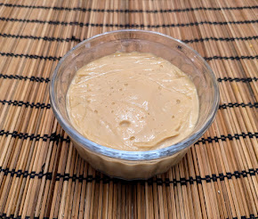
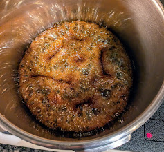

Crème caramel

Pour 6 petits pots :
- 125g de sucre roux, cassonade, ou vergeoise brune
- Une bonne pincée de sel
- 60mL d'eau
- 235mL de crème entière
- 235mL de lait entier
- La moitié d'une gousse de vanille
- 15g de fécule de maïs
- Deux gros jaunes d'œufs
- Un gros œuf
- 45g de beurre
- (Facultatif) Une cuillère à café d'extrait de vanille
- Peser et préparer tous les ingrédients au début. C'est important.
- Mettre le sucre, le sel et l'eau dans une grosse casserole. Faire fondre à feu moyen-fort, et laisser cuire une petite dizaine de minutes sans mélanger, ni même toucher la mixture du bout d'une cuillère. Il faut que ça fasse des grosses bulles, puis que ça épaississe et que les bulles deviennent plus petite, et que ça fasse des fissures sombres au fond du plat. C'est prêt quand ça sent fort le caramel et que ça a pris une couleur bien sombre ; la photo ci-dessous montre une étape pas trop loin de la fin du processus.
- Pendant ce temps, gratter la gousse de vanille, ajouter les graines au lait, et faire chauffer le lait et la crème (séparément) au micro-ondes une minute.
- Pendant ce temps, fouetter les œufs et la fécule de maïs dans un bol assez gros jusqu'à ce qu'il n'y ait plus de grumeaux.
- Lorsque le caramel est prêt, l'enlever du feu, et ajouter la crème progressivement en remuant en permanence. Ça fait plein de bruit et de mousse et ça fait un peu peur, mais ça va bien se passer. Ajouter ensuite le lait, toujours en mélangeant bien.
- Prendre une grosse louche du mélange chaud et la verser tout doucement sur les œufs en fouettant en permanence. C'est important d'aller doucement pour éviter que l'œuf ne cuise trop.
- Lorsque le bol est bien homogène, le rajouter dans la casserole, remettre la casserole sur feu moyen-fort et fouetter en permanence jusqu'à ce que ça épaississe. C'est fini non seulement lorsque ça nappe une cuillère, comme une crème anglaise, mais aussi lorsque ça s'arrête tout seul de tourner dans la casserole.
- Sortir du feu. Ajouter le beurre, l'extrait de vanille, mélanger.
- Passer le tout dans un chinois pour récupérer les petits bouts d'œuf cuit. Disposer dans des ramequins, et recouvrir de plastique alimentaire au contact de la crème pour éviter que ça forme une peau.
- Mettre au frais au moins 4h. Servir frais.

Retour à la liste des recettes